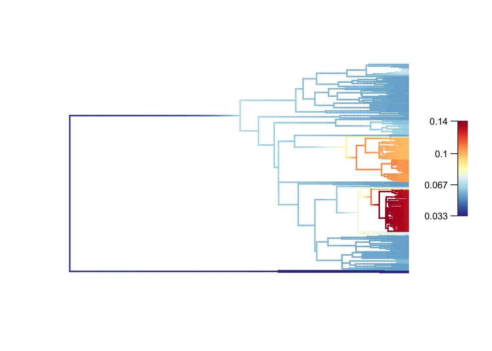
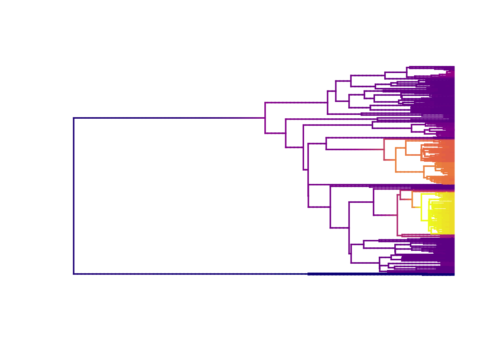
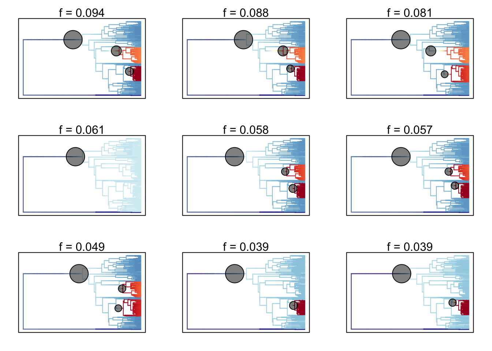
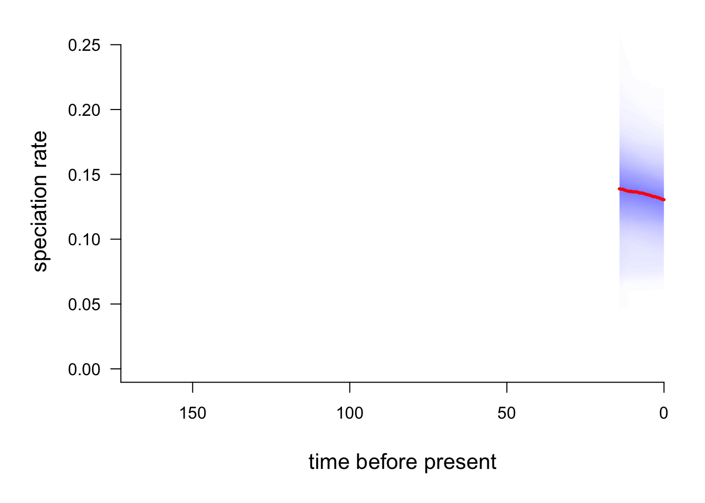
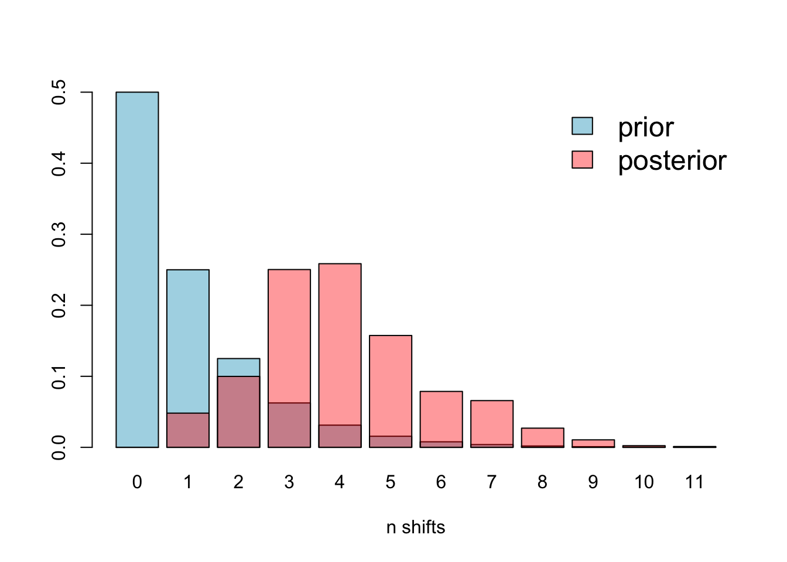

Practical 9 BAMM: Bayesian Analysis of Macroevolutionary Mixtures
The aims of this practical are to learn how to use R to use results obtained from BAMM to investigate rate shift regimes across phylogenies.
We will be using a dataset of body sizes from marsupials and monotremes. These data come from the PanTHERIA database (Jones et al. 2009) and the mammal supertree (Bininda-Emonds et al. 2008).
This practical is based on the Rabosky lab’s excellent resource for using BAMM found here. I highly recommend reading it, especially if you want to use BAMM on your own data.
REMEMBER
- Download all of the data for the practical into a folder somewhere on your computer.
- Set your working directory to this folder.
- Start a new script for this practical.
You will also need to install the following packages:
BAMMtoolscodaviridis
9.1 A quick intro to BAMM
Often in evolutionary biology we are interested in how clades (and their traits) diversify. The simplest models for looking at this are birth death models, where there is a rate of speciation (birth) and a rate of extinction (death) and these combine to get a rate of diversification (speciation - extinction). If diversification rates are high we tend to find phylogenies with lots of species.
The problem with these simple models is that they estimate a single rate of speciation and extinction across a whole tree. Obviously this is a huge oversimplification; we expect lots of changes in rates (or rate heterogeneity) through time, especially across fairly large trees. For example, we expect to see increases in speciation at points in time where a clade experiences an adaptive radiation, increases in extinction where the suddenly climate changes. BAMM (Bayesian Analysis of Macroevolutionary Mixtures) deals with this issue by allowing rates to vary across the tree (Rabosky et al 2014ab, Rabosky 2014).
More precisely, BAMM identifies discrete shifts in rate at nodes of a tree (either of speciation or of trait evolution, but we will focus on speciation here), i.e places where rates speed up or slow down. BAMM looks for rate shifts across the whole tree, so it can find 1, 2, 3 or more shifts. It does this using reversible jump Markov Chain Monte Carlo (i.e. Bayesian) methods to automatically explore a vast universe of possible models. It is biased towards simpler models (a common tactic in most evolutionary models - remember parsimony?) so rarely results in lots of rate shifts.
For more information it is worth checking out the references at the end of this practical.
9.2 A brief aside: how do I run BAMM?
BAMM is a command line program written in C++. Analysis and visualization of the results are performed using the R package BAMMtools (Rabosky et al. 2014a).
BAMM is pretty easy to run which makes it a slightly dangerous! It’s easy to run with no idea of what you are doing or why. If you want to use it for your projects you’ll need to do a lot of reading and thinking first. Here I am presenting a very simplified version so you can at least get a taste of what it does. We will not run BAMM itself in this practical, just BAMMtools in R. This is just for interest.
To run BAMM, you need to download the program first, then you run it via the command line (Terminal for Macs or something like cygwin in Windows). Your command line window will need to be opened from a folder containing the following files:
- Your phylogeny
- A control file (there is an example with the datasets)
- Your data - if doing trait evolution analyses
The control file specifies lots of information about how the BAMM model should be run, including MCMC settings (e.g. number of generations, number of chains, acceptance rates), the priors (including your expectation for the number of shifts, rates of speciation and extinction) and the initial values of the parameters. It is crucial that these settings are carefully thought through, and that multiple different combinations are tried to make sure models are converging etc.
Running BAMM is then as simple as running this in the command line:
bamm -c control.txt(assuming your control file is called control.txt, and your command line is running this in the folder containing the control file and your tree).
BAMM can take a long time to run for large datasets, and outputs several files with lots of different output. We will spend the rest of the practical focusing on some of these outputs.
9.3 What does a BAMM analysis produce?
Remember that BAMM is a Bayesian method, so rather than giving the one most likely result (like we get in maximum likelihood analyses), BAMM outputs a distribution of results, often containing thousands of results, that we call the posterior distribution (or just the posterior).
9.3.1 Distinct shift configurations and how to summarise them
For each MCMC run (in our BAMM analysis we ran the models 10^9 times!), BAMM simulates speciation and extinction along the tree, extracts the number of rate shifts (increase or decrease in speciation rate), and then works out the probability of that particular combination of rate shifts occurring. The results BAMM outputs (to the marsupial_event_data.txt file) are a sample of all possible combinations across all 10^9 models, in proportion to their posterior probability. The posterior, or distribution of results, from BAMM will thus contain lots of different combinations of rates and rate shifts, but will have those that occur more often across the 10^9 models appearing more often, than those that occur rarely appearing less often.
In the posterior, we call each of these possible combinations distinct shift configurations. These are the most probable configuration of shifts from one model from the posterior. For example, one shift configuration may be a speed up at node 34 and a slow down at node 22 on model 10000. Each model in the posterior might have a different distinct shift configuration, or they might all be very similar. It depends on the dataset.
9.3.1.1 How do we report these results?
The number of possible distinct shift configurations is huge. Eventually if ran BAMM for for long enough you’d find a shift on every branch in the tree (because the branches can show shifts due to the effect of the prior alone).
We know that all the distinct shift configurations are possible but they aren’t equally probable. As mentioned above some may be common, and others rare. We need some way of summarising thousands of models, and taking this into account. There are two main approaches.
Overall best shift configuration You can get this by looking at the maximum a posteriori (MAP) probability shift configuration, i.e. the one that appeared the most often in the posterior. This is a bit like using a consensus tree in phylogenetics. However, for most real datasets, the best rate shift configuration is merely one of a large number of possible rate shift configurations that have similar probabilities. So this method is not preferred (also if you’ve bothered to fit 10^9 models it seems pointless to just get one result!).
Credible shift sets An alternative way to present the results is to summarise all the distinct shift configurations. However, not all distinct shift configurations are going to be significant. Therefore, BAMM splits shifts into “important” ones that help explain the data (core shifts) and ones that are less important (or likely just due to priors) using marginal odds ratios. Specifically, BAMM computes the marginal odds ratio for each rate shift for every branch in the phylogeny. It then excludes all shifts that are unimportant using a pre-determined threshold value (usually 5). The remaining shifts are the credible shift set. These are usually reported in papers using BAMM.
9.4 A practical example looking at BAMM results using BAMMtools
This should all become clearer with an example. I have created a control file for the marsupial data (marsupial_control.txt) and run this with BAMM. The output files we will use are:
- marsupial_chain_swap.txt"
- marsupial_event_data.txt"
- marsupial_mcmc_out.txt"
- marsupial_run_info.txt"
As usual we’ll first need to load the packages we need.
library(BAMMtools)
library(coda)Note I’m assuming you’ve set the working directory and all the data files are in this folder.
9.5 Assessing MCMC convergence
Before we look at any of the exciting results, we need to check if our MCMC run actually converged. You should be familiar with this from building Bayesian phylogenies. Luckily BAMM is really helpful in what it outputs, so we can do this quite easily by looking at the marsupial_mcmc_out.txt file.
# Read in the file
mcmc <- read.csv("marsupial_mcmc_out.txt")
# Take a look at the plot
plot(mcmc$logLik ~ mcmc$generation)
This gives us a vague idea of whether your run has converged. SPOILER alert, it has because I played around with the parameters in BAMM for ages until it did!
Again, as with Bayesian phylogenies, we next want to discard some runs as burnin. Let’s discard the first 10% of samples.
burnstart <- floor(0.1 * nrow(mcmc))
postburn <- mcmc[burnstart:nrow(mcmc), ]We can also use the coda library to check the effective sample sizes (ESS) of the log-likelihood and the number of shift events present in each sample.
effectiveSize(postburn$N_shifts)## var1
## 1077.517effectiveSize(postburn$logLik)## var1
## 901In general, we want these to be at least 200, and larger for small datasets. Note that these are standard procedures for any Bayesian analysis, not anything magical invented just for BAMM.
OK great now we know that our analysis converged we can look at the cool stuff.
9.6 Analysis of rate shifts in marsupial phylogeny
We first need to load our phylogeny and the output of BAMM called the event data file. This contains most of the outputs we’ve mentioned above, such as the branch-specific speciation rates, positions of rate shifts etc.
Note that we again exclude the first 10% of samples as burn-in using burnin = 0.1.
tree <- read.tree("marsupialtree.tre")
# This step may take some time...
edata <- getEventData(tree, eventdata = "marsupial_event_data.txt", burnin = 0.1)## Reading event datafile: marsupial_event_data.txt
## ...........
## Read a total of 1000 samples from posterior
##
## Discarded as burnin: GENERATIONS < 99000000
## Analyzing 901 samples from posterior
##
## Setting recursive sequence on tree...
##
## Done with recursive sequenceThe message this produces tells you how many samples were read and how many excluded as burnin.
9.6.1 How many rate shifts?
The first thing we might like to know is how many rate shifts occur in our tree? We can do this using our event data (edata) to look at the posterior probabilities of models sampled by BAMM.
shifts <- summary(edata)
shiftsThis should show the posterior probabilities of each number of rate shifts observed during simulation of the posterior. This doesn’t tell us where they occur on the tree, just how many there are, and what their probability was.
Here it looks like 4 shifts occurred most often, but with a range in number of shifts from 0 to 11.
9.7 Mean phylorate plot
Next we might want to visualise these results on our tree. Mean phylorate plots are a way of visualizing the mean, model-averaged diversification rates along every branch of the tree. We can plot one using plot.bammdata.
plot.bammdata(edata, lwd = 2, legend = TRUE, cex = 0.5)
High rates are in red or yellow, and the low rates in blue. You can add the option labels = TRUE to get tip labels, but they’re really hard to read so you might need to look at a normal tree plot plot(tree, cex = 0.5) to see which species are involved here. I’ve provided a large PDF version of the tree in the folder. Also check out [https://en.wikipedia.org/wiki/Marsupial] to learn more about marsupials!
In our data we see low rates in the monotremes (the three species in dark blue at the bottom) which is not surprising given their separation from the rest of the tree and very long branches. The two clades that appear to evolve more quickly are the Dasyuromorphia, the marsupial carnivores (including quolls and Tasmanian devils - though these are missing from this phylogeny), and the Macropodidae, the kangaroos and wallabies. Again this makes sense as these groups are very species rich. American possums, and other Australasian marsupials have much lower rates of evolution.
We can also plot with slightly nicer colour-blind friendly colours from the package viridis (have a look at the options and choose your favourite).
library(viridis)
plot.bammdata(edata, lwd = 2, pal = plasma(4))
9.8 Best single distinct shift configuration
To extract the overall best distinct shift configuration, we use the maximum a posteriori (MAP) probability shift configuration, i.e. the one that appeared the most often in the posterior, as follows.
best <- getBestShiftConfiguration(edata, expectedNumberOfShifts = 1)## Processing event data from data.frame
##
## Discarded as burnin: GENERATIONS < 0
## Analyzing 1 samples from posterior
##
## Setting recursive sequence on tree...
##
## Done with recursive sequenceWe can plot this as follows:
plot.bammdata(best, lwd = 2, pal = plasma(4))
addBAMMshifts(best, cex = 1.5, bg = "white")
The best single distinct shift configuration consists of three shifts. One on the branch leading to the marsupials, perhaps unsurprising given the low rates at the root with monotremes, and another two at the clades we already identified as having high rates.
9.9 Credible sets of shifts
Using just one answer is not very desirable, so let’s look at the shifts from across the posterior. As described above, the number of possible distinct shift configurations is huge, but not all these shifts are going to be significant. BAMM computes the marginal odds ratio for each a rate shift for every branch in the phylogeny. It then excludes all shifts that are unimportant using a pre-determined threshold value (usually 5). The remaining shifts are the credible shift set.
To extract the credible shift set for our data, we can use the BAMMtools function credibleShiftSet.
css <- credibleShiftSet(edata, expectedNumberOfShifts = 1, threshold = 5, set.limit = 0.95)
summary(css)##
## 95 % credible set of rate shift configurations sampled with BAMM
##
## Distinct shift configurations in credible set: 113
##
## Frequency of 9 shift configurations with highest posterior probability:
##
##
## rank probability cumulative Core_shifts
## 1 0.09433962 0.09433962 3
## 2 0.08768036 0.18201998 3
## 3 0.08102109 0.26304107 3
## 4 0.06104329 0.32408435 1
## 5 0.05771365 0.38179800 3
## 6 0.05660377 0.43840178 3
## 7 0.04883463 0.48723640 3
## 8 0.03884573 0.52608213 2
## 9 0.03884573 0.56492786 2
##
## ...omitted 104 additional distinct shift configurations
## from the credible set. You can access the full set from your
## credibleshiftset objectHere we see that there are 113 distinct shift configurations in our posterior. This highlights why using BAMM is a good idea - we can incorporate the distribution of results rather than giving just one best answer.
We also see that even though there are 113 distinct configurations in the 95% credible set, 9 of these account for most of the probability of the data.
We can generate phylorate plots for each of these shift configurations using plot.credibleshiftset
plot.credibleshiftset(css)## Omitted 104 plots
The text above each phylorate plot gives the posterior probability of each shift configuration. Because many samples from the posterior can be assigned to each distinct shift configuration, the phylorate plots generated by plot.credibleshiftset are model-averaged mean rate parameters across all samples assignable to a given configuration. The shifts themselves are indicated with circles on branches, with the circle size being related to the probability of that particular shift.
Note: this will set the plotting window to plot 9 plots, so we need to take it back to the default of one plot using:
par(mfrow = c(1,1))9.10 Clade specific evolutionary rates
We might also be interested in seeing if particular clades have different rates of speciation or extinction. This can be done in BAMMtools using the function getCladeRates, which computes the average rate for the chosen clade.
Here we might be interested in seeing how different the rates are in our fastest clade, the macropodids, compared to the rest of our species.
First we can look at the average rate across the whole tree using getCladeRates.
allrates <- getCladeRates(edata)allrates is a list with speciation and extinction rates, with the mean rate across all marsupials for each sample in the posterior. We can extract the mean speciation rate for our tree and estimate the 90% highest posterior density (HPD) as follows.
mean(allrates$lambda)## [1] 0.06926659quantile(allrates$lambda, c(0.05, 0.95))## 5% 95%
## 0.06160736 0.07829082To get the rates for a specific clade, we just specify the node leading to that clade.
In the our marsupial/monotreme example, node 301 is the node number of the macropodid clade (you can find identify node numbers using plot.phylo and nodelabels from the ape package). We can estimate the mean speciation rates for macropodids as follows:
kangaroorates <- getCladeRates(edata, node = 301)
mean(kangaroorates$lambda)## [1] 0.1323322quantile(kangaroorates$lambda, c(0.05, 0.95))## 5% 95%
## 0.07387751 0.18106431To get the rates for everything but the macropodids, we do the same thing, but add the argument nodetype = "exclude"
nonkangaroorate <- getCladeRates(edata, node = 301, nodetype = "exclude")
mean(nonkangaroorate$lambda)## [1] 0.06298746quantile(nonkangaroorate$lambda, c(0.05, 0.95))## 5% 95%
## 0.05438734 0.07304822Note that these are mean time-averaged clade-specific rates. If diversification rates have changed dramatically through the history of a particular clade, a single overall mean rate might not be particularly informative.
9.11 Rate-through-time analysis
We may also want to visualise how rates of speciation change through time on our tree. We can do this by plotting a rate-through-time curve using the plotRateThroughTime function.
# This may take some time...
plotRateThroughTime(edata, ratetype = "speciation")
The red line is the average speciation rate, with density shading showing the confidence intervals.
You can also use plotRateThroughTime to plot speciation through time curves for just a portion of your phylogeny. Here we can just look at the macropodids (node 301):
plotRateThroughTime(edata, node = 301, nodetype="include")
And compare these to the phylogeny minus the macropodids:
plotRateThroughTime(edata, node = 301, nodetype="exclude")
9.12 Macroevolutionary cohort analysis
A final nice feature of BAMMtools that we’ll play with today (there are others too) is the ability to easily perform a macroevolutionary cohort analysis (Rabosky et al 2014b). These are a good way of summarising which species/clades share correlated macroevolutionary dynamics i.e. similar rates of speciation etc. The basic idea is to visualize the pairwise probabilities that any two species share a common macroevolutionary rate regime.
First we generate a cohort matrix, which contains the pairwise probabilities of shared macroevolutionary dynamics. We then pass thsi to the cohorts function, which generates the plot.
cmat <- getCohortMatrix(edata)
cohorts(cmat, edata)
Each cell of the cohort matrix corresponds to a pair of tip taxa from the phylogeny. You read these plots by drawing an imaginary line between any two tips of the tree - the color of the matrix at their intersection is the probability that those taxa share a common rate dynamic. Species pairs that share a common rate dynamic are red, species with different macroevolutionary dynamics are blue.
Here there appear to be a very complicated set of macroevolutionary dynamics (again I wonder why I decided to use a completely untested real example for this practical!). Dasyurids and macropodids appear to be similar, as do the American possums and the Australasian possums. There are also small pockets of similarity across the other marsupial groups, for example bettongs have a similarly slow rate to the possums.
Check out this example with whales for an easier to interpret plot!
9.13 Assumptions and issues with BAMM
Like all methods, BAMM has a number of important assumptions and issues.
First, it assumes that evolutionary dynamics are described by discrete shifts at nodes. It could equally be gradual changes along branches. BAMM cannot detect this, but neither can any other method. However it is worth remembering this when interpreting results, especially on long branches.
Second, the prior for the number of expected shifts will have a large effect on how many shifts are detected, particularly for long branches as the probability of seeing a shift due to the prior alone increases with branch length. To solve this BAMM estimates marginal odds ratios, scaling each marginal shift probability by the prior and branch length.
You can (and should) check for this problem using the code below.
postfile <- "marsupial_mcmc_out.txt"
bfmat <- computeBayesFactors(postfile, expectedNumberOfShifts = 1, burnin=0.1)
plotPrior(mcmc, expectedNumberOfShifts = 1)
There is some overlap, but it’s clear that the prior is different to the posterior, so this issue is not affecting our analyses.
Thirdly, BAMM (and all other similar methods) gives inaccurate results for phylogenies with incomplete sampling, i.e. where you don’t have every species in your phylogeny. This may be quite likely if you’re working with invertebrates or plants or pretty much anything other than mammals and birds! If the sampling is non random, for example, you’re missing a whole clade, the results will be even weirder. BAMM has ways of dealing with this, but it’s best to try and avoid the problem in the first place by only using BAMM where you’ve got a fairly complete phylogeny, or at least one where the missing species are missing at random. Rabosky and colleagues recommend that if <10% of the species are in your phylogeny, you should add them in yourself. See [http://bamm-project.org/advanced.html#incompsampling] for more help with this.
Additionally, there has been a quite a lot of debate about the validity of BAMM in the literature recently. Moore et al. 2016 proposed several serious issues with BAMM, which basically boil down to two main points:
- BAMM outputs are highly sensitive the priors
- The likelihood function BAMM uses is wrong
Rabosky and colleagues have refuted these criticisms here: [http://bamm-project.org/prior.html], [http://bamm-project.org/replication.html], [http://bamm-project.org/developertoggle.html], [http://bamm-project.org/mea_likelihood.html], and [http://ift.tt/2m7qv6T]. There’s no consensus just yet as to whether BAMM is usable or not. I would say use with caution, but be prepared to defend your choice!
9.14 References
- BAMM website [http://bamm-project.org/documentation.html]
- Moore et al 2016. Critically evaluating the theory and performance of Bayesian analysis of macroevolutionary mixtures. PNAS, 113:9569-9574. [http://www.pnas.org/content/113/34/9569.full]
- Rabosky, 2014. Automatic Detection of Key Innovations, Rate Shifts, and Diversity-Dependence on Phylogenetic Trees. PLoS ONE. [http://dx.doi.org/10.1371/journal.pone.0089543]
- Rabosky et al. 2014a. BAMMtools: an R package for the analysis of evolutionary dynamics on phylogenetic trees. Methods Ecol Evol, 5: 701-707 [10.1111/2041-210X.12199].
- Raboksy et al. 2014b. Analysis and Visualization of Complex Macroevolutionary Dynamics: An Example from Australian Scincid Lizards. Syst Biol (2014) 63 (4): 610-627. [https://doi.org/10.1093/sysbio/syu025].
- Rabosky et al 2017. Is BAMM flawed? Theoretical and practical concerns in the analysis of multi-rate diversification models. Syst Biol [http://ift.tt/2m7qv6T]
- Shi & Rabosky 2015. Speciation dynamics during the global radiation of extant bats. Evolution, 69: 1528-1545 [10.1111/evo.12681].